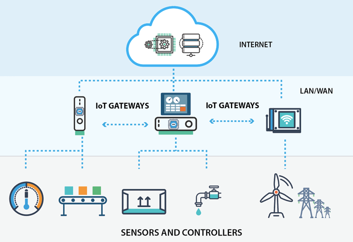
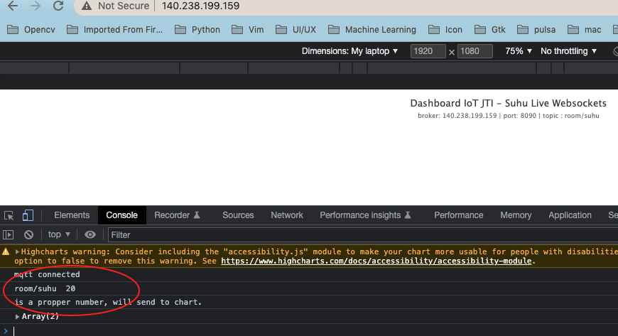

IoT Gateway dan Web Dashboard
Topik Bahasan
IoT Gateway dan Message Broker
Kemampuan Akhir yang Direncanakan
- Mahasiswa mampu melakukan instalasi dan konfigurasi message broker.
- Mahasiswa mampu mengolah data sensor di dalam server local atau cloud.
- Mahasiswa bisa membuat dashboard sederhana data sensor
Teori Singkat
IoT Gateway dan message broker kaitannya sangat erat yang tidak dapat dipisahkan pada sebuah infrasturktur IoT, untuk lebih jelaskan dapat dilihat pada gambar di bawah ini

sumber: https://openautomationsoftware.com/open-automation-systems-blog/what-is-an-iot-gateway/
Dari gambar di atas terlihat bahwa IoT gateway menjembatani sensor dan controller untuk melakukan komunikasi dengan internet, sehingga sebuah IoT gateway penyedia layanan diantara lokal koneksi parangkat IoT dan cloud/internet, perangkat IoT mampu berkomuniasi dengan perangkat IoT yang lain, dan jaringan yang lebih luas.
Biasanya IoT gateway adalah sebuah perangkat hardware dengan kemampuan konektivitas dan komputasi yang tinggi untuk meneruskan data ke cloud untuk diolah menjadi informasi yang lebih bermanfaat. Beberapa perangkat yang bisa digunakan IoT gateway misalkan Raspberry atau model industrial komputer.
Sementara message broker sebuah penyedia pertukaran data antara iot device dengan cloud, message broker dipasang pada sebuah IoT gateway. Beberapa protokol yang digunakan oleh message broker ini misalkan AMQP, CoAP, dan MQTT. Konsep dari prokol AMQP dan MQTT adalah dengan menerapkan teknik publish dan subscribe dan CoAP mirip dengan REST API dengan design konsumsi low power, publish berarti mengirimkan data ke message broker dengan topik tertentu sedangkan subscribe sendiri berarti berlangganan ke message broker pada sebuah topik.
Praktikum
1. Konfigurasi Web Server
Data-data yang dihasilkan oleh sensor agar lebih menarik perlu divisualisasi atau ditampilkan, dalam hal ini pada sebuah halaman website. Jika pada praktikum yang sebelumnya kita telah berhasil memanfaatkan IoT Platform, Node-RED untuk menampilkan data tersebut. Pada kesempatan kali ini akan dicoba untuk membuat visualisasi data dari awal, butuh sebuah web server. Kemudian untuk memudahkan membuat kode program karena akan membutuhkan dashboard, misalkan chart, gauge, dan yang lain digunakan halaman html,css serta menggunakan bootstramp.
1. Konfigurasi PHP dan Codeiginter
Seperti biasanya kita akan menyiapkan instance, EC2 untuk kebutuhan di atas. Langkah-langkahnya adalah sebagai berikut
Buatlah sebuah instance EC2, kemudian pada langkah
3. Configure Instancetambahkan baris perintah di bawah ini pada bagianUser Data. Untuk lebih jelasnya perhatikan gambar di bawah ini
#!/bin/bash apt update apt install apache2 php libapache2-mod-php -y apt install php-json php7.4-mysql php-xml php-intl php-curl -y apt install composer -yDengan menggunakan script di atas, kita tidak perlu repot-repot menjalankan satu persatu ketika instance berhasil dibuat karena sudah dijalankan ketika proses pembuatan instance.
Di EC2 kita diizinkan untuk membuat script ketika membuat instance, biasanya yang disupport adalah bash scripting atau perintah dasar pada sebuah terminal. Ketika bash script tersebut dijalankan, maka akan dijalankan sebagai user root sehingga ketika kita ingin membuat direktori pada path tertentu harus full path, misalkan buat direktori di home berarti
mkdir /home/ubuntu/[nama direktori]Silakan tambahkan port http yaitu 80 pada langkah
6. Configure Security Group. Port tersebut digunakan untuk akses web server atau web yang akan kita buat.Setelah instance berhasil dijalankan, kemudian silakan buka browser Anda kemudian ketik/paste domain(alamat) dari instance tersebut. Misalkan domain saya adalah
http://ec2-54-227-120-124.compute-1.amazonaws.com/seharusnya akan muncul tampilan seperti pada gambar berikut
Untuk memudahkan proses pengembangan aplikasi web, kita akan mencoba menggunakan framework codeigniter4. Silakan masuk ke EC2 yang telah dibuat sebelumnya, bisa menggunakan putty atau perintah ssh. Jalankan beberapa baris perintah di bawah ini
composer create-project codeigniter4/appstarter iot-jti --no-dev sudo chown -Rv www-data iot-jti/writable sudo mv iot-jti/ /var/www/html/Langkah installasi codeigniter menggunakan perintah
composeragar lebih gampang karena akan download di repository, langkah yang lain bisa secara manual dengan mengunjungi website codeigniter dan download.Ketika akses instance melalui browser yang ditampilkan masih halaman index dari apache, kita akan mencoba untuk mengubah halaman tersebut menjadi halaman codeigniter. Sebelumnya kita harus membuat konfigurasi untuk website kita, ketik beberapa perintah di bawah ini
sudo cp /etc/apache2/sites-available/000-default.conf /etc/apache2/sites-available/iot-jti.conf sudo nano /etc/apache2/sites-available/iot-jti.conf sudo a2ensite iot-jti.conf sudo a2dissite 000-default.conf sudo systemctl restart apache2Ketika menjalankan perintah
sudo nano /etc/apache2/sites-available/iot-jti.confsilakan dicariDocumentRoot /var/www/htmlkemudian diganti menjadiDocumentRoot /var/www/html/iot-jti/public, hanya mengganti path-nya saja. CTRL+O kemudian enter untuk menyimpan perubahan dan CTRL+x untuk keluar editor nano.Buka browser atau kembali browser, kemudian ketik alamat ip atau dns instance. Misalkan
http://ec2-54-227-120-124.compute-1.amazonaws.com/seharusnya akan menampilkan halaman seperti pada gambar berikutUntuk mempermudah proses coding, aktifkan mode debug codeigniter menggunakan perintah di bawah ini
cd /var/www/html/iot-jti mv env .env nano .envSilakan dicari pada bagian
# CI_ENVIRONMENT = productiondiubah menjadiCI_ENVIRONMENT = development, tekan CTRL+O kemudian enter untuk menyimpan perubahan dan CTRL+x untuk keluar editor nano.Buka kembali browser, ketik alamat ip atau dns seharusnya akan menampilkan seperti pada gambar berikut pada bagian bawah halaman codeigniter.

Codeignier sudah berhasil terpasang pada instance atau server, selanjutnya adalah membuat kode sesuai dengan kebutuhan. Skenario yang bisa dilakukan adalah untuk mengedit atau mengubah kode yang terdapat di codeigniter yaitu bisa menggunakan repository, misalkan git. Upload semua satu project codeigniter ke repository yang di server, kemudian bisa di-clone ke komputer lokal atau laptop untuk melaukan editing. Ketika selesai edit, push ke repository dan di server atau instance harus melakukan pull.
Skenario yang lain, download project codeigniter di server pindah ke laptop/lokal komputer. Bisa menggunakan WinSCP atau tool yang lain. Ketika ada perubahan di lokal, maka harus upload perubahan tersebut yang ada di server.
Jujur lebih menyarankan skenario yang pertama untuk menghindari terjadi konflik, terlebih lagi ketika pengembangannya sudah lebih dari satu orang.
2. Konfigurasi Web Server OCI
Pada langkah yang kedua akan melakukan konfigurasi pada Oracle Cloud Infrastructure, silakan masuk terlebih dahulu ke instance yang akan Anda konfigurasi kemudian ikuti langkah-langkah di bawah ini
Silakan memasang web server terlebih dahulu, web server yang akan diguankan adalah apache. Berikut perintah untuk melakukan installasi
sudo apt update sudo apt install apache2 -yUntuk melakukan pengecekan ketika selesai proses installasi adalah dengan menggunakan perintah
telnet.ubuntu@praktikum-iot:~$ telnet localhost 80 Trying 127.0.0.1... Connected to localhost. Escape character is '^]'. ^]Selain mengunakan telnet, bisa juga menggunakan perintah
sudo systemctl status apache2untuk mengetahui status apakah apache berjalan atau tidak.Dari keluaran perintah
telnetdi atas web server sudah berjalan, akan tetapi ketika ingin mengakses instance kita dari luar masih belum bisa dilakukan. Silakan terlebih dahulu Virtual Cloud Network seperti pada materi yang sebelumnya agar port 80 bisa diakses dari luar. Jangan lupa jalankan perintah di bawah ini ketika sudah menambahkan atau mendaftarkan port 80.sudo iptables -I INPUT 6 -m state --state NEW -p tcp --dport 80 -j ACCEPT sudo netfilter-persistent saveTampilan ketika sudah berhasil adalah halaman home page, seperti pada gambar berikut

- Normalnya web server harus dijalankan manual ketika instance tidak berjalan, agar dapat secara otomatis berjalan silakan
ketik perintah di bawah ini
Silakan restart instance Anda, untuk membuktikan apakah perintah di atas sesuai yang diharapkan yaitu web server sudah berjalan tanpa menjalankan secara manual kembali.sudo systemctl enable apache2
2. Konfigurasi Message Broker
1. Amazone Web Service (AWS)
Untuk praktikum sebelumnya kita memanfaatkan message broker yang sudah ada, dalam praktikum yang kedua mencoba bagaimana caranya konfigurasi message broker untuk aplikasi yang akan kita bangun. Silakan mengikuti langkah-langkah di bawah ini
Buatlah sebuah instance baru, kemudian untuk langkah
3. Configure Instancepada bagianUser Datatambahkan baris perintah sebagai berikut#!/bin/bash apt-add-repository ppa:mosquitto-dev/mosquitto-ppa -y apt-get update apt-get install mosquitto mosquitto-clients -yBaris di atas digunakan untuk melakukan installasi mosquitto sebagai message broker sekaligus install mosquitto client untuk melaukan pengujian publish dan subscribe. Atau dapat melihat pada gambar berikut

Tambahkan 2 port yang perlu dibuka selain port 22 untuk ssh, misalkan port 1883 dan 8089 pada langkah
6. Configure Security Group. Perhatikan gambar di bawah iniKetika instance sudah jalan, silakan remote menggunakan putty atau tool yang lain. Kemudian jalankan perintah di bawah ini untuk mengecek apakah installasi mosquitto sudah berhasil.
ubuntu@ip-172-31-16-8:~$ telnet localhost 1883 Trying 127.0.0.1... Connected to localhost. Escape character is '^]'. ^] telnet> Connection closed.Perintah di atas menandakan bahwa proses installasi mosquitto telah berhasil, kemudian silakan dicoba untuk melakukan publish dan subscribe message. Buka windows baru lagi atau duplicate session, selanjutkan lakukan perintah seperti pada gambar berikut

Terlihat bahwa proses subscribe dan publish berhasil dilakukan pada localhost. Parameter
-tmenandakan nama topiknya,-mberarti messagenya yang akan dikirimkan. Kemudian misalkan untuk mencoba pada host atau server yang lain tambahkan parameter-hdiikuti nama host atau ip. Misalkanmosquitto_sub -h broker.sinaungoding.com -t test, dan untuk melakukan subscribemosquitto_pub -h broker.hivemq.com -t test -m "mqtt test".
2. Oracle Cloud Infrastructure (OCI)
Untuk konfigurasi message broker di OCI sebenarnya sama, hanya langkah-langkah pada menu atau istilah yang berbeda ketika menggunakan Oracle Cloud Infrastructure.
- Silakan masuk terlebih dahulu ke instance Anda, kemudian jalankan perintah di bawah ini
Perintah di atas digunakan untuk melakukan installasi message broker yaitu menggunakansudo apt-add-repository ppa:mosquitto-dev/mosquitto-ppa -y sudo apt-get update sudo apt-get install mosquitto mosquitto-clients -ymosquitto dan mosquitto-clientsuntuk melakukan publish atau subscribe menggunakan terminal. Seperti biasa untuk melakukan pengecekan kita bisa menggunakan perintahtelnetapakah sudah berhasil dan berjalan belum message broker.
Kita butuh lagi port yang akan digunakan sebagai client untuk terhubung ke message broker menggunakan protokol websocket, misalkan kita akan menggunakan port 8090. Jangan lupa untuk menyimpan perubahan firewall yang telah dikonfigurasi pada VCN menggunakan perintah firewall.ubuntu@praktikum-iot:~$ telnet localhost 1883 Trying 127.0.0.1... Connected to localhost. Escape character is '^]'. ^]sudo iptables -I INPUT 6 -m state --state NEW -p tcp --dport 1883 -j ACCEPT sudo iptables -I INPUT 6 -m state --state NEW -p tcp --dport 8090 -j ACCEPT sudo netfilter-persistent save - Setelah message broker berhasil dikonfigurasi, selanjutnya kita bisa memanfaatkan atau mencoba untuk publish message data
sekaligus menerima pengiriman data. Perintah yang bisa dilakukan adalah sebagai berikut untuk menerima data atau subscribe
Perintah di atas untuk mernerima data dengan topik "iot/polinema", sehingga ketika ada yang mengirimkan data dengan topik tersebut data akan diterima. Kemudian untuk menerima data dapat menggunakan perintah berikutubuntu@praktikum-iot:~$ mosquitto_sub -t "iot/polinema"
Dengan menggunakan perintah di atas digunakan untuk mengirimkan data "iot jaya" dengan topik "iot/polinema", seharusnya pada perintah subscribe di atas akan menerima data.ubuntu@praktikum-iot:~$ mosquitto_pub -t "iot/polinema" -m "iot jaya"
Menambahkan Password MQTT
Agar lebih aman terhadap pihak-pihak yang tidak bertanggungjawab, perlu ditambahkan keamanan ketika akan menggunakan message broker yang telah kita install, salah satunya yaitu menambahkan authentifikasi berupa user dan password ketika ingin melakukan subscribe ataupun publish message.
Ikuti langkah-langkah di bawah ini untuk melakukan konfigurasinya
Buatlah sebuah user
jtidengan perintah di bawah ini. Userjtihanya contoh, silakan diganti dengan yang lain jika diperlukanubuntu@ip-172-31-16-8:~$ sudo mosquitto_passwd -c /etc/mosquitto/passwd jti Password: Reenter password:Buatlah file konfigurasi yang menginfokan bahwa untuk publish tidak dizinkan tanpa password. Ketik perintah di bawah ini
sudo nano /etc/mosquitto/conf.d/jti.confAkan muncul editor nano, selanjutnya tambahkan dua baris perintah berikut
listener 8090 protocol websockets listener 1883 #protocol websockets per_listener_settings true allow_anonymous false password_file /etc/mosquitto/passwdTekan CTRL+O untuk menyimpan konfigurasi file dan CTRL+X untuk keluar dari editor nano.
Silakan restart mosquitto untuk memberikan perubahan dan coba lakukan publish atau subscribe sebuah message, kira-kira perintahnya adalah sebagai berikut
sudo systemctl restart mosquittoVerifikasi Hasil Percobaan
Silakan dicoba untuk publish message menggunakan perintah berikut
buntu@ip-172-31-16-8:~$ mosquitto_pub -h localhost -t "test" -m "hello world" Connection error: Connection Refused: not authorised. Error: The connection was refused.Dari keluaran di atas terlihat bahwa terjadi error karena ketika publish message tidak menggunakan user dan password. Kemudian ketika ditambahkan username dan password seperti perintah berikut
ubuntu@ip-172-31-16-8:~$ mosquitto_pub -h localhost -t "test" -m "hello world" -u jti -P 1234Ketika tidak menampilkan pesan berarti berhasil publish message.
Untuk memudahkan melakukan pengecekan bisa menggunakan mqtt client menggunakan http://mqtt-explorer.com, silakan download dan installasi. Tampilannya adalah sebagai berikut

Pertanyaan
- Apakah fungsi dari baris perintah
protocol websocketspada file konfig mosquitto? - Silakan ganti menjadi
falsepadaper_listener_settings true, restart mosquitto. Apakah yang akan terjadi atau pengaruhnya apa? - Buatlah user yang lain, kemudian lakukan subscribe dan publish message!
3. Menghubungkan Smart Device Aplikasi Web
Setelah menyiapkan webserver untuk aplikasi web dan message broker untuk mengirimkan data sensor ataupun aktuator, selanjutnya perlu disiapkan Node-MCU dengan kode program jobsheet sebelumnya dan tentunya akan kita tambahkan halaman dashboad untuk menampilkan data sensor dari Node-MCU. Adapun langkah-langkahnya adalah sebagai berikut
Tambahkan kode program pada Node-MCU, dibutuhkan DHT11. Kode programnya adalah sebagai berikut
#include <Arduino.h> #include <ESP8266WiFi.h> #include <PubSubClient.h> #include <SimpleDHT.h> // hp // const char *ssid = "od3ng"; // const char *password = "0d3n9bro"; // kampus const char *ssid = "Smart Parking"; // sesuaikan dengan username wifi const char *password = "5m4rT_P4rk!Ng"; // sesuaikan dengan password wifi const char *mqtt_server = "broker.hivemq.com"; // isikan server broker WiFiClient espClient; PubSubClient client(espClient); SimpleDHT11 dht11(D7); long now = millis(); long lastMeasure = 0; String macAddr = ""; void setup_wifi() { delay(10); Serial.println(); Serial.print("Connecting to "); Serial.println(ssid); WiFi.begin(ssid, password); while (WiFi.status() != WL_CONNECTED) { delay(500); Serial.print("."); } Serial.println(""); Serial.print("WiFi connected - ESP IP address: "); Serial.println(WiFi.localIP()); macAddr = WiFi.macAddress(); Serial.println(macAddr); } void reconnect() { while (!client.connected()) { Serial.print("Attempting MQTT connection..."); if (client.connect(macAddr.c_str())) { Serial.println("connected"); } else { Serial.print("failed, rc="); Serial.print(client.state()); Serial.println(" try again in 5 seconds"); delay(5000); } } } void setup() { Serial.begin(115200); Serial.println("Mqtt Node-RED"); setup_wifi(); client.setServer(mqtt_server, 1883); } void loop() { if (!client.connected()) { reconnect(); } if (!client.loop()) { client.connect(macAddr.c_str()); } now = millis(); if (now - lastMeasure > 5000) { lastMeasure = now; int err = SimpleDHTErrSuccess; byte temperature = 0; byte humidity = 0; if ((err = dht11.read(&temperature, &humidity, NULL)) != SimpleDHTErrSuccess) { Serial.print("Pembacaan DHT11 gagal, err="); Serial.println(err); delay(1000); return; } static char temperatureTemp[7]; dtostrf(temperature, 4, 2, temperatureTemp); Serial.println(temperatureTemp); client.publish("room/suhu", temperatureTemp); // agar lebih unix silakan tambahkan NIM ex: 0001/room/suhu } }Beberapa yang perlu disesuaikan adalah terkait dengan
ssiddanpassword, kemudianportdanserveruntuk message broker, silakan menggunakan message broker yang telah dikonfigurasi sebelumnya. Untuk port, yang perlu disesuaikan adalahclient.setServer(mqtt_server, 1883);Edit file atau buat file index.html yang terdapat di
/var/www/html/index.htmlmenggunakan file seperti di bawah iniIsi dari file php tersebut adalah sebagai berikut
<!DOCTYPE html> <html lang="en"> <head> <meta charset="UTF-8"> <meta http-equiv="X-UA-Compatible" content="IE=edge"> <meta name="viewport" content="width=device-width, initial-scale=1.0"> <title>JTI IoT</title> <script type="text/javascript" src="http://ajax.googleapis.com/ajax/libs/jquery/1.8.2/jquery.min.js"></script> <script src="https://cdnjs.cloudflare.com/ajax/libs/paho-mqtt/1.0.1/mqttws31.min.js" type="text/javascript"></script> <script type="text/javascript"> var MQTTbroker = '****';//servernya disesuaikan var MQTTport = ****; //sesuaikan port websockets messsage broker, var MQTTsubTopic = '****'; //topiknya perlu disesuaikan var chart; // global variuable for chart var dataTopics = new Array(); //mqtt broker var client = new Paho.MQTT.Client(MQTTbroker, MQTTport, "jti_" + parseInt(Math.random() * 100, 10)); client.onMessageArrived = onMessageArrived; client.onConnectionLost = onConnectionLost; //mqtt connecton options including the mqtt broker subscriptions var options = { userName: "****",//silakan disikan username dan password yang didaftarkan mqtt password: "****", timeout: 3, useSSL: false, onSuccess: function() { console.log("mqtt connected"); // Connection succeeded; subscribe to our topics client.subscribe(MQTTsubTopic, { qos: 1 }); }, onFailure: function(message) { console.log("Connection failed, ERROR: " + message.errorMessage); //window.setTimeout(location.reload(),20000); //wait 20seconds before trying to connect again. } }; //can be used to reconnect on connection lost function onConnectionLost(responseObject) { console.log("connection lost: " + responseObject.errorMessage); //window.setTimeout(location.reload(),20000); //wait 20seconds before trying to connect again. }; //what is done when a message arrives from the broker function onMessageArrived(message) { console.log(message.destinationName, '', message.payloadString); //check if it is a new topic, if not add it to the array if (dataTopics.indexOf(message.destinationName) < 0) { dataTopics.push(message.destinationName); //add new topic to array var y = dataTopics.indexOf(message.destinationName); //get the index no //create new data series for the chart var newseries = { id: y, name: message.destinationName, data: [] }; chart.addSeries(newseries); //add the series }; var y = dataTopics.indexOf(message.destinationName); //get the index no of the topic from the array var myEpoch = new Date().getTime(); //get current epoch time var thenum = message.payloadString.replace(/^\D+/g, ''); //remove any text spaces from the message var plotMqtt = [myEpoch, Number(thenum)]; //create the array if (isNumber(thenum)) { //check if it is a real number and not text console.log('is a propper number, will send to chart.') plot(plotMqtt, y); //send it to the plot function }; }; //check if a real number function isNumber(n) { return !isNaN(parseFloat(n)) && isFinite(n); }; //function that is called once the document has loaded function init() { //i find i have to set this to false if i have trouble with timezones. Highcharts.setOptions({ global: { useUTC: false } }); // Connect to MQTT broker client.connect(options); }; //this adds the plots to the chart function plot(point, chartno) { console.log(point); var series = chart.series[0], shift = series.data.length > 20; // shift if the series is // longer than 20 // add the point chart.series[chartno].addPoint(point, true, shift); }; //settings for the chart $(document).ready(function() { chart = new Highcharts.Chart({ chart: { renderTo: 'container', defaultSeriesType: 'spline' }, title: { text: 'Dashboard IoT JTI - Suhu Live Websockets' }, subtitle: { text: 'broker: ' + MQTTbroker + ' | port: ' + MQTTport + ' | topic : ' + MQTTsubTopic }, xAxis: { type: 'datetime', tickPixelInterval: 150, maxZoom: 20 * 1000 }, yAxis: { minPadding: 0.2, maxPadding: 0.2, title: { text: 'Value', margin: 80 } }, series: [] }); }); </script> <script src="http://code.highcharts.com/stock/highstock.js"></script> <script src="http://code.highcharts.com/stock/modules/exporting.js"></script> </head> <body onload="init();"> <!--Start the javascript ball rolling and connect to the mqtt broker--> <div id="container" style="height: 500px; min-width: 500px"></div><!-- this the placeholder for the chart--> </body> </html>Code di atas digunakan untuk menampilkan suhu yang dikirimkan oleh Node-MCU, karena aplikasi web berjalan di atas browser sehingga protokol yang digunakan tidak menggunakan http biasanya untuk komunikasi antara aplikasi dengan server broker. Yang diguankan adalah protokol websocket, komunikasi tersebut di-hanlde oleh javascript dengan bantuan library
pahomqtt.Perlu disesuikan port, server, dan topik dari kode di atas agar bisa menampilkan data, silakan disesuaikan dengan konfigurasi yang telah Anda lakukan sebelumnya. Untuk melakukan pengecekan silakan buka browser Anda kemudian ketika alamat server Anda dana amati log dengan cara inspect element. Berikut ini adalah tampilan ketika web socket sudah terhubung ke message broker. Tampilan di atas ketika tidak ada data  Sedangkan tampilan di atas adalah dengan cara inspect element untuk mengetahui logging pada kode program untuk mengetahui web socket terhubung ke message broker.
Ketika tidak terhubung dipastikan kembali konfigurasi pada NodeMCU dan halaman html terkait dengan host message broker, port, user, dan password. Ketika tidak terhubung menggunakan user password coba pada bagian
per_listener_settings true, silakan ubah menjadi false.Upload kode tersebut ke server, bisa menggunakan WinSCP atau ketika sudah menggunakan repository berarti perlu
pushke repo selanjutnya yang di server perlu dilakukanpull. Selanjutnya buka browser Anda dan ketik alamat aplikasi web yang ada di instance EC2, seharusnya menampilkan halaman seperti berikut
Pertanyaan
- Berapa lama sekali pengiriman data sensor DHT dari Node-MCU ke server broker? Silakan diubah menjadi lebih cepat!
- Fungsi baris perintah
dtostrf(temperature, 4, 2, temperatureTemp);digunakan untuk apa? Jelaskan! - Modifikasi bentuk chart pada halaman
index.htmldalam bentuk yang lain, misalkan chart bar ataupun gauge!
Video Pendukung
Tugas
Buatlah sebuah tampilan website yang fungsi utama adalah untuk menampilkan sensor cahaya, suhu, dan kelembaban. Kemudian Dapat juga menghidupkan masing-masing LED RGB, website tersebut harus telah teruplod di OCI(lampirkan alamatnya pada laporan praktikum) dan videokan hasilnya.
Untuk tampilan grafik bisa menggunakan referensi dari highcharts.com
Sebagai contoh bisa melihat tampilan seperti berikut ini